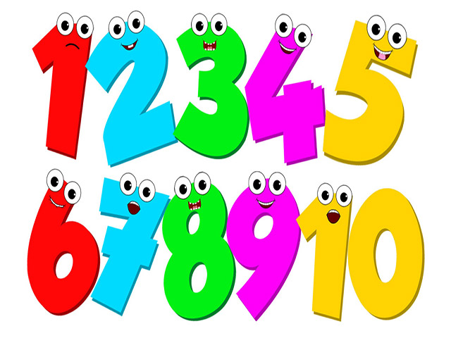
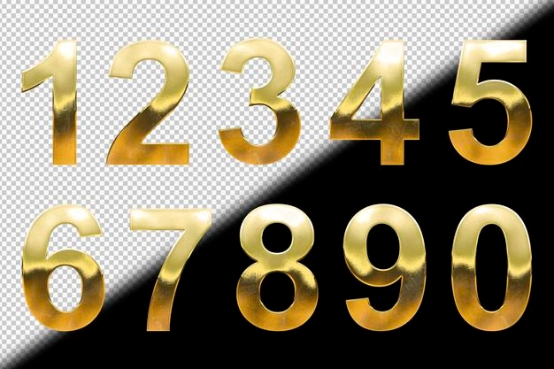

Me presento, mi nombre es Jhosbyn Daniel Guillén Ortiz.
Actualmente tengo 21 años y soy Mexicano.
Soy Ingeniero en Desarrollo de Software de la Universidad
Tecmilenio.
Me gusta el desarrollo web y de aplicaciones moviles. Encajo
perfecto en cualquier ecosistema de trabajo y me dapto de una
manera impecable.
¿Quien soy yo?
Proyectos en los que he trabajado
- 
- 